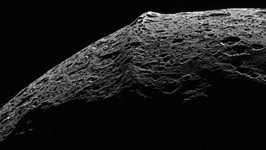
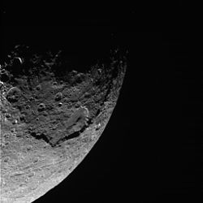

Iapetus as seen by the Cassini orbiter
Iapetus is the third biggest moon of Saturn.
It was discovered by Giovanni Cassini and is named after the Greek mythological Titan of the same name.
It is the most distant Saturnian regular moon and has a relatively high orbital inclination.
It is composed mostly of ice and has a heavily cratered surface like most of the other major moons of Saturn.
One unique distinction is the different coloration on both hemispheres - the trailing hemisphere is bright, while the leading is much darker.
A 13 km high mountain ridge along the equator is still unexplained, but one suggestion is that it might have been a collapsed ring system.
Iapetus has been visited by several missions that have passed Saturn.
Iapetus is the first of the moons that Giovanni Cassini discovered after Christiaan Huygens discovered Titan.
In 1671, he observed it for the first time, but for the following months he had difficulties finding it on the other side of the planet.
Eventually, he rediscovered it, but much dimmer, concluding that it has two distinctly colored hemispheres.
Iapetus is named after one of the Titans in Greek mythology, father of Atlas, Prometheus, Epimetheus, Menoetius, Buphagus, and Anchiale.
Initially, Cassini called the four moons he discovered Sidera Lodoicea ("the stars of Louis") in honour of Louis XIV.
Later, these four, along with Titan, were numbered I through V in order from closest to most distant, and later were updated when Mimas, Enceladus, and Hyperion were discovered.
John Herschel was the first to suggest naming satellites of Saturn after Titans and Giants, since Cronus (Greek analogue of the Roman Saturn) is their leader.
Orbit and rotation
It takes 79 Earth days for Iapetus to complete one orbit around Saturn.
It is tidally locked to Saturn.
The semi-major axis is 3.6 million km, making it the 24th most distant from Saturn and the last regular satellite.
Unlike the other regular moons of the system, Iapetus has an inclination of 15.47°, but it is very unlikely to have been a captured body.
It also has an eccentricity of 0.028, almost as high as that of Titan.
Iapetus is the third Saturnian moon by size with a mean diameter of 1469 km.
The radial dimensions are 746 × 712 km, which makes it slightly more oblate.
The slow 79-day rotation of Iapetus (coincides with its orbital period due to the tidal locking) is too slow for the current difference in the two radii.
That means that the shape is "frozen" and that Iapetus is currently not in hydrostatic equilibrium.
It also deviates slightly from an ellipsoid, as its Equator bulges more sharply than usual, ending with a mountainous ridge.
Like the other icy moons of Saturn, Iapetus is likely internally differentiated.
The moon’s low density - only about 1.2 times that of liquid water - suggests that ice dominates its composition, while the rocky material likely makes up less than a quarter of its total mass.

Close-up of the equatorial ridge
Iapetus is notable for its two-tone coloration, which divides the moon into two visually distinct hemispheres.
The leading hemisphere is very dark, with a reddish-brown hue, while the trailing hemisphere is significantly brighter, almost white.
This dramatic contrast was first observed by Giovanni Cassini who lost it for several months when the trailing hemisphere was facing Earth.
That same dark region in thus named Cassini Regio and is thought to be a thin layer of organic compounds or dust.
The bright region, meanwhile, is composed of water ice.
It is divided int Roncevaux Terra to the north and Saragossa Terra to the south.
The boundary between the two hemispheres is sharp, where several craters wuthin the bright region have dark color.
Likely causes for the discoloration could be the sublimation and redeposition of ice on the brighter side, brough by outer moons, or both.

Edge of the Turgis crater with the smaller Malun, which has partially filled up with debris from a landslide
One of Iapetus’s most unique and mysterious features is its equatorial ridge.
The mountain range is located in Cassini Regio and runs almost perfectly along the moon’s equator.
This ridge reaches heights of up to 13 kilometers, nearly two times the height of Mount Everest, and stretches for about 1,300 kilometers - nearly a third of the Equator's circumference.
The brighter region features only isolated peaks that also follow the Equator.
The origin of the ridge is still debated, but leading theories suggest it could be the remnants of a collapsed ring system, material upwelled from within the moon, or the result of ancient tectonic activity.
Iapetus has an old, geologically inactive surface covered with numerous large craters.
There are several relatively large craters.
The largest one is Turgis, located in Cassini Regio, which is 580 km in diameter and features steep scarps 15 km high.
Near Turgis is another large crater, named Falsaron.
Within Saragossa Terra are located the two overlapping craters Engelier and Gerin, the second and third largest.
The former has a distinct central peak and destroyed most of the latter.
The first mission to Saturn was Pioneer 11, but no pictures were made of the distant Iapetus.
Voyager 1 made the first pictures, which showed the clear divide between the two hemispheres.
Voyager 2 flew by the moon closer at 909 thousand kilometers, compared to the 2.48 million kilometers of Voyager 1.
The images were of the opposite side.
The Cassini orbiter managed to complete five close flybys of Iapetus, with the closest being at a distance of 1,227 km.
Because of the great distance from Saturn, no closer and more detailed approaches were made.
External links
{% include catnatural-satellites.html %}